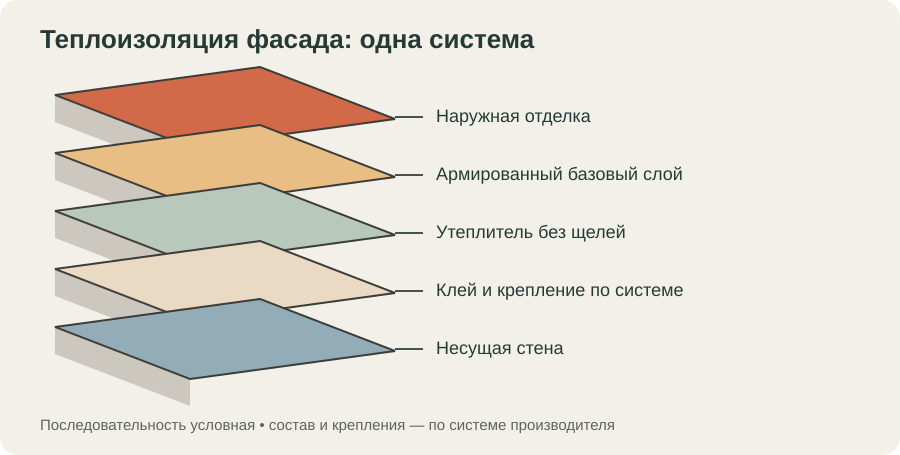

Вентилируемый фасад: устройство
Из чего состоит навесной вентилируемый фасад.

Навесной вентилируемый фасад (НВФ) — система, в которой облицовка крепится на металлической подсистеме с воздушным зазором 40–60 мм от утеплителя.
Слои системы: стена, кронштейны с терморазрывом, плиты минеральной ваты плотностью 80–100 кг/м³ (одним или двумя слоями), ветрогидрозащитная мембрана, воздушный зазор, направляющие, облицовка.
Облицовкой служат керамогранит, фиброцементные панели, композитные кассеты, сайдинг, металлопрофиль. Воздух в зазоре движется снизу вверх и удаляет влагу из утеплителя, поэтому стена остаётся сухой.
В системе применяется только негорючий утеплитель — каменная минеральная вата. Пенополистирол в вентфасадах использовать нельзя, так как воздушный зазор работает как дымоход и ускоряет распространение огня.
Главное за минуту
- Навесной вентилируемый фасад (НВФ) — система, в которой облицовка крепится на металлической подсистеме с воздушным зазором 40–60 мм от утеплителя.
- Слои системы: стена, кронштейны с терморазрывом, плиты минеральной ваты плотностью 80–100 кг/м³ (одним или двумя слоями), ветрогидрозащитная мембрана, воздушный зазор, направляющие, облицовка.
- Облицовкой служат керамогранит, фиброцементные панели, композитные кассеты, сайдинг, металлопрофиль.

Проверить перед работой
- Выберите материал, разрешённый для конкретной конструкции и нагрузки.
- Проверьте непрерывность утепления на откосах, цоколе и примыканиях.
- Защитите материал от намокания и проверьте крепление до закрытия слоя.
Частые ошибки
- Сравнивать только плотность без назначения продукта.
- Оставлять щели между плитами или закрывать мокрый утеплитель.
Видео по теме
- Утепление фасада: Дом за год · ТЕХНОНИКОЛЬ
Источники и изображения
Монтаж волокнистого утеплителя · Erik Mclean · Источник изображения · Pexels License
 Инструкция
Инструкция